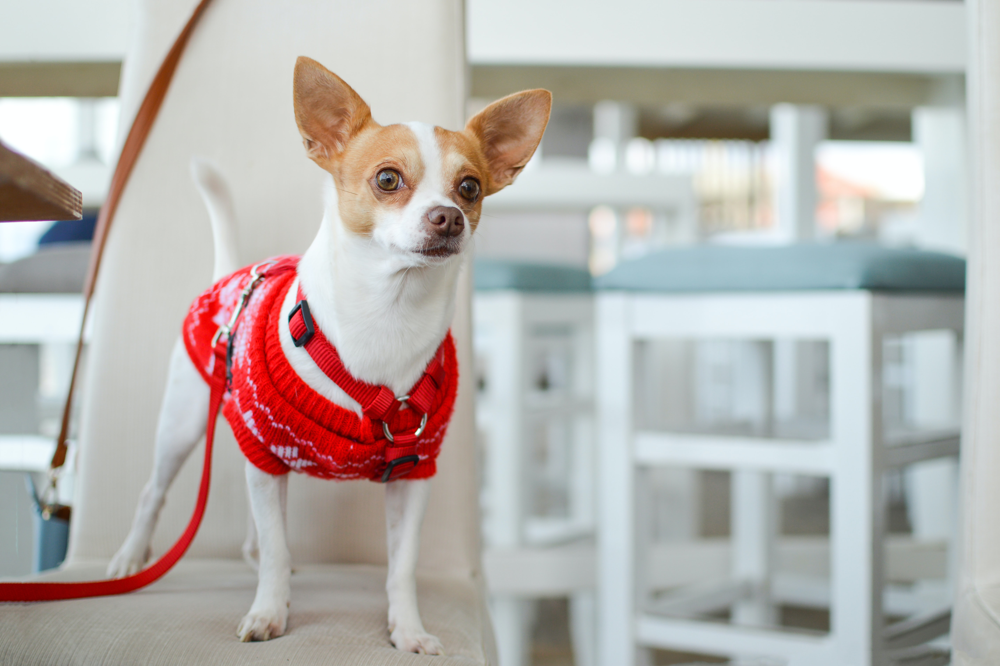
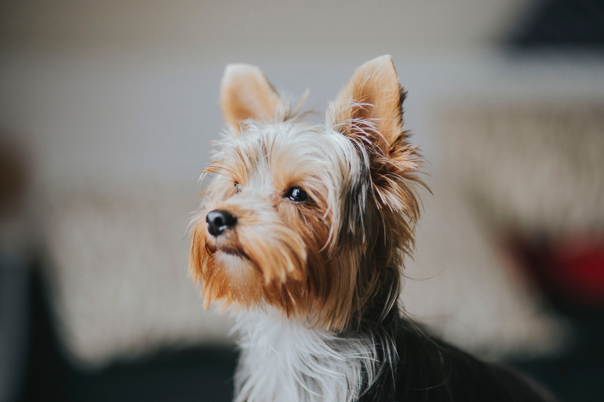
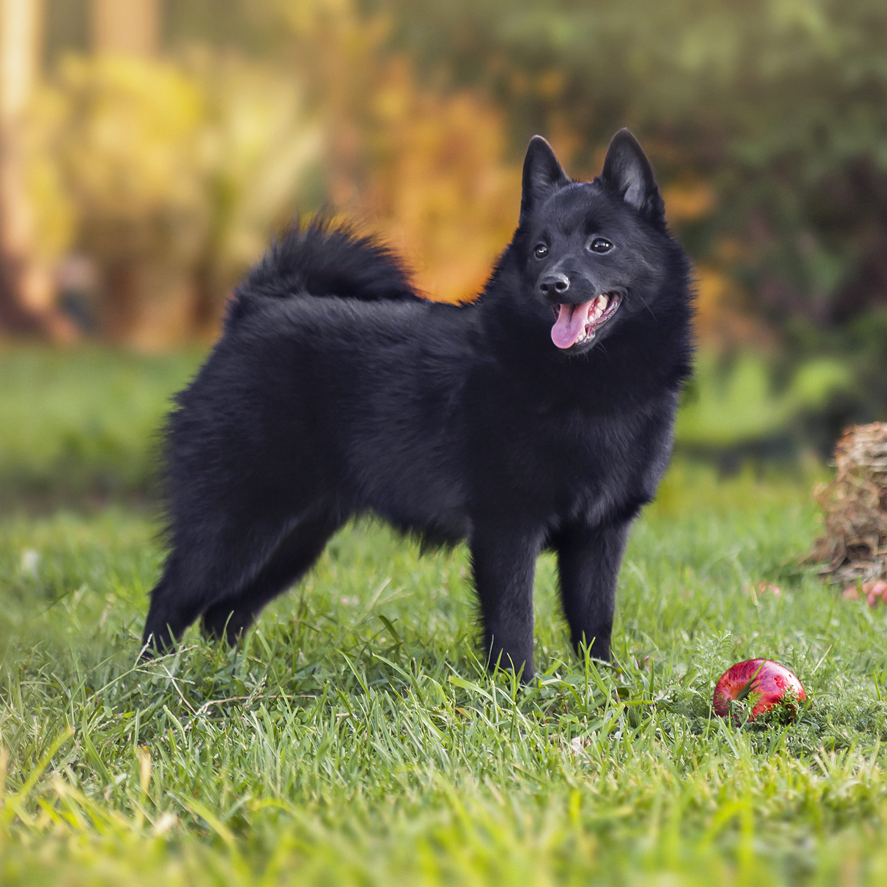
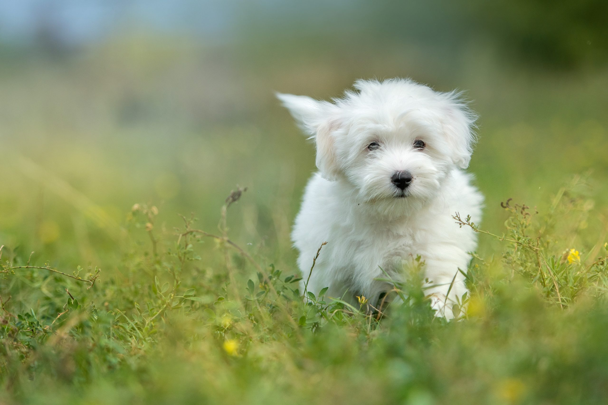
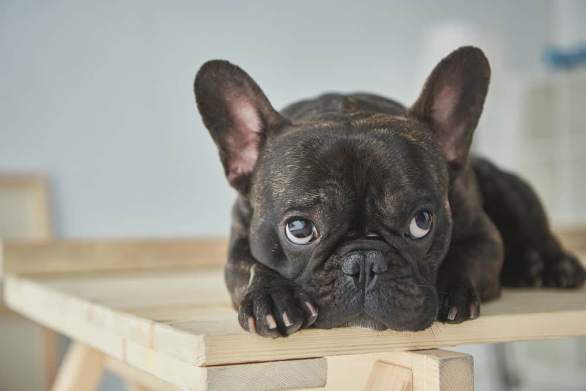

DISCOVER DIFFERENT TYPES OF BREEDS
Chihuahua
 One of the smallest dogs in the canine kingdom gets the first spot in our list. Chihuahuas are known for their charming and sassy personalities, and since they're so tiny, they make great purse dogs!
Chihuahuas remained a rarity until the early 20th century, and the American Kennel Club did not register a Chihuahua until 1904. In a 1520 letter, Hernan Cortés wrote that the Aztecs raised and sold the little dogs as food. Colonial records refer to small, nearly hairless dogs at the beginning of the 19th century, one of which claims 16th-century conquistadores found them plentiful in the region later known as Chihuahua. Reference: Read whole article
Yorkshire Terrier
 You probably know Yorkies by the glamorous floor-length coats they sport at dog shows, but the breed was actually once used for a less fancy job, as ratters in mines and mills. Today Yorkies are one of the most popular American dog breeds, and their owners love them for their feisty terrier personalities.
A popular companion dog, the Yorkshire Terrier has also been part of the development of other breeds, such as the Silky Terrier.Most have a black and tan coat, but they are also known to have a silver-grey or a blonde coat. Yorkshire terriers are playful and energetic dogs. They often exhibit separation anxiety when left alone, which is a reason that some owners keep two dogs.
Yorkshire Terriers are an easy dog breed to train. This results from their own nature to work without human assistance. They are naturally smart and quick to learn with many being food and/or praise motivated. Because they were developed as a working breed, many need a lot of both physical and mental stimulation—with both long walks/runs but also indoor games and training to keep their mind busy. They are known for being yappy, but many have reported that a contented Yorkie is a quiet one—that will happily curl up on your knee in the evening. Reference: Read more
Italian Greyhound
 Elegant, alert, and playful, these miniature Greyhounds make the perfect little lap dogs.
They might make a pretty picture sitting on your couch, but they're coursing hounds at heart
with a love of the chase.
Elegant, alert, and playful, these miniature Greyhounds make the perfect little lap dogs.
They might make a pretty picture sitting on your couch, but they're coursing hounds at heart
with a love of the chase.
The Italian Greyhound is the smallest of the sighthounds. It weighs no more than 5 kg and stands 32 to 38 cm at the withers. It is deep in the chest, with a tucked-up abdomen, long slender legs and a long neck. The head is small; it is elongated and narrow. The gait should be high-stepping and well-sprung, with good forward extension in the trot, and a fast gallop. The coat may be solid black, grey or isabelline; white markings are accepted on the chest and feet only. Life expectancy is about 14 years. In the United States, the Ortheopedic Foundation for Animals has found the Italian Greyhound to be the least affected by hip dysplasia of 157 breeds studied, with an incidence of 0.
The original function of the Piccolo Levriero was to hunt hare and rabbit; it is capable of bursts of speed up to 60 km/h (37 mph). Although assigned to the sighthound or hare-coursing groups by the Fédération Cynologique Internationale and the Ente Nazionale della Cinofilia Italiana, the Italian Sighthound is as it was in the past kept mostly as a companion dog. It is classified as a toy breed by the American Kennel Club and the Kennel Club of the United Kingdom.
Dogs of this kind were taken in the first half of the nineteenth century to the United Kingdom, where they were known as Italian Greyhounds.The first volume of The Kennel Club Calendar and Stud Book, published in 1874, lists forty of them. The first breed association was the Italian Greyhound Club, founded in Britain in 1900. Registrations by the American Kennel Club began in 1886. Reference: Read more
Schipperke
 Affectionately dubbed Belgium’s “little captain” and bred as a watchdog, the Schipperke is curious, lively, and intense. They also have a mischievous side, so there will never be a dull moment with these pups! Schipperkes are naturally curious and high-energy dogs and require much exercise. They are sometimes very active, running very fast and then breaking into quick, agile criss-cross patterns. However the same Schipperke can also rest for hours on end. So they are not constantly active, in contrast to the Jack Russell terrier. The Schipperke is Known for a stubborn, mischievous, and headstrong temperament, it also chases small animals.The Schipperke is sometimes referred to as the "little black fox", or the "little black devil".
Schipperkes are very aware of who is the dominant human in the home and they will display exclusive submissive affection towards them. Typically they will lie on their backs with their bellies exposed, their ears folded back, and if petted or stroked, will lick the dominant humans hand slowly. They will only do this for one person in the house and are keen observers of who is the strongest sounding human in the "pack". Schipperkes will however, become very excited and demonstrative towards anyone who grabs a leash as they know this means they will be going outside. They can sometimes have similar responses when someone is preparing food for them in their bowl. As aloof as they can be, they can become very excited and expressive in these situations. Reference: Read more
Coton de Tulear
 These charming, happy-g0-lucky companions will bring a lot of joy and laughter into their human's life.
They're natural clowns with a knack for walking on their hind legs.They get their name from their fluffy,
cotton-soft white coats. The Coton de Tuléar comes in three accepted colors: white (sometimes with
tan markings; all white is preferred by show breeders); black and white; and tricolor.
However, the tan and white may become all white, the blacks will often fade to grey or white,
and fur will most likely change throughout puppyhood. The breed even has a fade gene that causes the colors,
which are very dark when a puppy, to fade and turn white at the base of the hair as it lengthens;
that is why the Champagne or Champagne Teddy Bear Coton eventually turns white when the adult hair comes in.)
These charming, happy-g0-lucky companions will bring a lot of joy and laughter into their human's life.
They're natural clowns with a knack for walking on their hind legs.They get their name from their fluffy,
cotton-soft white coats. The Coton de Tuléar comes in three accepted colors: white (sometimes with
tan markings; all white is preferred by show breeders); black and white; and tricolor.
However, the tan and white may become all white, the blacks will often fade to grey or white,
and fur will most likely change throughout puppyhood. The breed even has a fade gene that causes the colors,
which are very dark when a puppy, to fade and turn white at the base of the hair as it lengthens;
that is why the Champagne or Champagne Teddy Bear Coton eventually turns white when the adult hair comes in.)
The Coton is a playful, affectionate, intelligent breed. Although generally quiet, it can become very vocal—grunting, barking, and making other noises when having fun. Cotons are known to have a habit of jumping up and walking on their hind legs to please people. Most Cotons love meeting new people and are very curious about new situations. Cotons are easy to train as they are very eager to please. Cotons love to swim, run, and play. They adapt well to any kind of living environment. A common trait of the Coton de Tulear behavior is to come alive in the evening. Reference: Read more
 The Coton is, in general, a healthy breed. However, there are still some health issues as there are in all breeds. The most serious issues are heart problems, liver shunts, back (disc) problems, and eye problems. Luckily, these are still relatively uncommon in the breed. The small gene pool of this breed is owing to its near extinction. Due to inbreeding by disreputable breeders, there is an increased incidence of disease. The smaller the gene pool, the more likely a breed is to have genetic abnormalities.French Bulldog
 French bulldogs are one of the world's most popular dog breeds, especially among city dwellers. They're loved for their adorable, bat-like ears and affectionate personalities. Frenchies are also known not to bark much, so they're great for apartments and other communal living situations! The small Bulldog type gradually became thought of as a breed, and received a name, the Bouledogue Francais.This Francization of the English name is also a contraction of the words boule (ball) and dogue (mastiff). The dogs were highly fashionable and were sought after by society ladies and Parisian prostitutes alike, as well as creatives such as artists, writers, and fashion designers. The artists Edgar Degas and Henri de Toulouse-Lautrec are thought to have French Bulldogs in their paintings. However, records were not kept of the breed's development as it diverged further away from its original Bulldog roots. As it changed, terrier stock had been brought in to develop traits such as the breed's long straight ears.
The American Kennel Club standard for the French Bulldog states that it should be muscular, with a soft and loose coat forming wrinkles. The AKC Standard weight for a French Bulldog is maximum 28 pounds. The head of a French bulldog should be square shaped and large, with ears that resemble bat ears. French bulldogs are a flat-faced breed. Eyes that are AKC Standard approved for French Bulldogs are dark and almost to the point of being black. Blue eyed French bulldogs are not AKC approved.The coat of a French bulldog should short haired and fine and silky. Acceptable colors under the breed standard are the various shades of brindle, fawn, cream or white with brindle patches (known as "pied"). The fawn colors can be any light through red. The most common colors are brindle, then fawn, with pieds being less common than the other colors. Reference: Read more